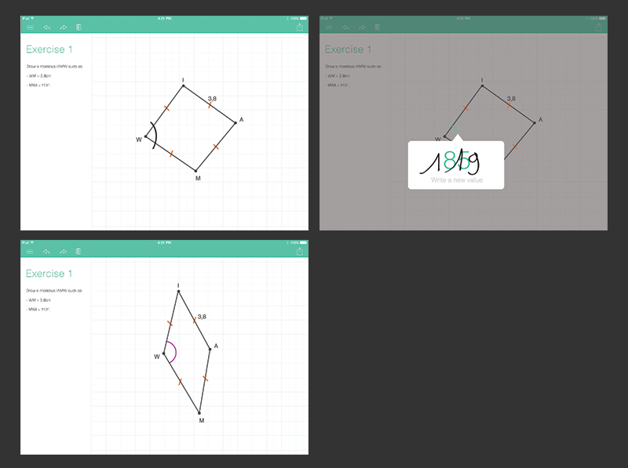
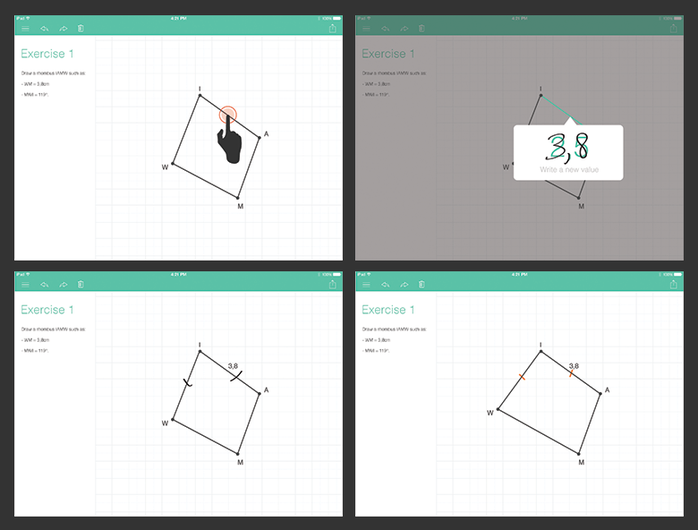
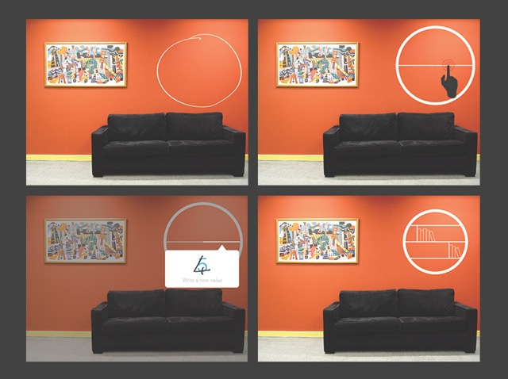

See below a few integration examples of the MyScript Geometry Widget.
The input box is a Math Widget feature and cannot be reproduced with the Geometry Widget only. Note that all available features for the Geometry Widget are listed in the API reference.
In this scenario, the user handwrites a geometric shape, labels its vertices, modifies it using constraints such as segment length, angle width, parallelism and perpendicularity. The shape is automatically beautified and updated with these constraints.


In this scenario, the user designs furniture by combining handwritten geometric shapes that are then beautified and by setting their size using constraints.
